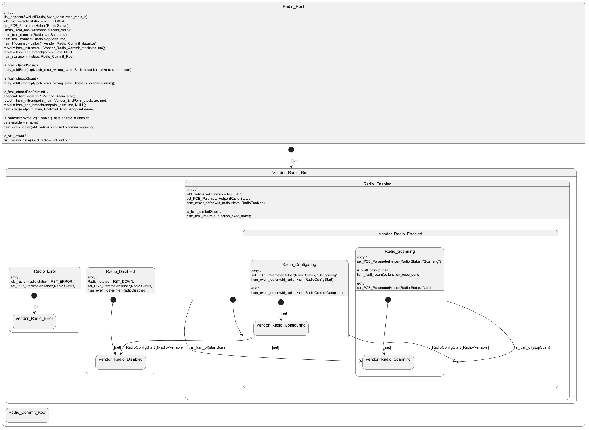

@startuml
state Radio_Root {
Radio_Root : entry /
Radio_Root : llist_append(&wld->llRadio, &wld_radio->wld_radio_it);
Radio_Root : wld_radio->radio.status = RST_DOWN;
Radio_Root : set_PCB_ParameterHelper(Radio.Status)
Radio_Root : Radio_Root_hookwritehandlers(wld_radio);
Radio_Root : hsm_fcall_connect(Radio.startScan, me);
Radio_Root : hsm_fcall_connect(Radio.stopScan, me);
Radio_Root : hsm_t *commit = calloc(1,Vendor_Radio_Commit_datasize);
Radio_Root : retval = hsm_init(commit, Vendor_Radio_Commit_stacksize, me);
Radio_Root : retval = hsm_add_branch(commit, me, NULL);
Radio_Root : hsm_start(commitstate, Radio_Commit_Root);
[*] --> Vendor_Radio_Root : [set]
Radio_Root :
Radio_Root : is_fcall_of(startScan) /
Radio_Root : reply_addError(reply,pcb_error_wrong_state, Radio must be active to start a scan);
Radio_Root :
Radio_Root : is_fcall_of(stopScan) /
Radio_Root : reply_addError(reply,pcb_error_wrong_state, There is no scan running);
Radio_Root :
Radio_Root : is_fcall_of(addEndPointIntf) /
Radio_Root : endpoint_hsm = calloc(1,Vendor_Radio_size);
Radio_Root : retval = hsm_init(endpoint_hsm, Vendor_EndPoint_stacksize, me);
Radio_Root : retval = hsm_add_branch(endpoint_hsm, me, NULL);
Radio_Root : hsm_start(endpoint_hsm, EndPoint_Root, endpointname);
Radio_Root :
Radio_Root : is_parameterwrite_of("Enable") [data.enable != enabled] /
Radio_Root : data.enable = enabled;
Radio_Root : hsm_event_defer(wld_radio->hsm,RadioCommitRequest);
' Radio_Root --> Vendor_Radio_Configuring : RadioCommitRequest
Radio_Root :
Radio_Root : is_exit_event /
Radio_Root : llist_iterator_take(&wld_radio->wld_radio_it);
state Vendor_Radio_Root {
state Radio_Disabled {
Radio_Disabled : entry /
Radio_Disabled : Radio->status = RST_DOWN;
Radio_Disabled : set_PCB_ParameterHelper(Radio.Status)
Radio_Disabled : hsm_event_defer(me, RadioDisabled);
[*] --> Vendor_Radio_Disabled : [set]
}
state Radio_Enabled {
Radio_Enabled : entry /
Radio_Enabled : wld_radio->radio.status = RST_UP;
Radio_Enabled : set_PCB_ParameterHelper(Radio.Status)
Radio_Enabled : hsm_event_defer(wld_radio->hsm, RadioEnabled);
[*] --> Vendor_Radio_Enabled : [set]
Radio_Enabled :
Radio_Enabled : is_fcall_of(startScan) /
Radio_Enabled : hsm_fcall_return(e, function_exec_done);
Radio_Enabled --> Vendor_Radio_Scanning : is_fcall_of(startScan)
state Vendor_Radio_Enabled {
state Radio_Scanning {
Radio_Scanning : entry /
Radio_Scanning : set_PCB_ParameterHelper(Radio.Status, "Scanning")
Radio_Scanning :
Radio_Scanning : is_fcall_of(stopScan) /
Radio_Scanning : hsm_fcall_return(e, function_exec_done);
Radio_Scanning --> Vendor_Radio_Enabled : is_fcall_of(stopScan)
Radio_Scanning :
Radio_Scanning : exit /
Radio_Scanning : set_PCB_ParameterHelper(Radio.Status, "Up")
[*] --> Vendor_Radio_Scanning : [set]
state Vendor_Radio_Scanning {
}
}
state Radio_Configuring {
Radio_Configuring : entry /
Radio_Configuring : set_PCB_ParameterHelper(Radio.Status, "Configuring")
Radio_Configuring : hsm_event_defer(wld_radio->hsm,RadioConfigStart)
[*] --> Vendor_Radio_Configuring : [set]
Radio_Configuring --> Vendor_Radio_Enabled : RadioConfigStart [Radio->enable]
Radio_Configuring --> Vendor_Radio_Disabled : RadioConfigStart [!Radio->enable]
Radio_Configuring :
Radio_Configuring : exit /
Radio_Configuring : hsm_event_defer(wld_radio->hsm,RadioCommitComplete)
state Vendor_Radio_Configuring {
}
}
}
}
state Radio_Error {
Radio_Error : entry /
Radio_Error : wld_radio->radio.status = RST_ERROR;
Radio_Error : set_PCB_ParameterHelper(Radio.Status)
[*] --> Vendor_Radio_Error : [set]
}
}
--
state Radio_Commit_Root {
}
}
@enduml